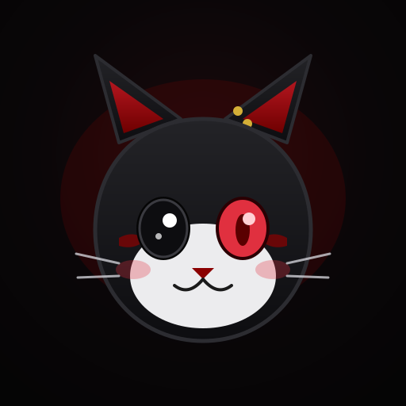

FLUFFFACEclient install mods is it safe?A cute little Minecraft: Bedrock client that lives on top of your game. Keystrokes, CPS, a crosshair, an AI helper, an in-game mod menu — and new mods show up by themselves.
ฅ^•ﻌ•^ฅ
Grab the installer above and run Fluffface-Setup. Windows SmartScreen may warn on an unsigned app — click More info → Run anyway.
Open Fluffface → ./config and paste an Anthropic API key so fluff.ai works. It stays on your PC.
In Minecraft: Settings → Video → turn Fullscreen off (borderless looks the same) so the overlay shows.
Hit PLAY. The overlay turns on automatically. You're done ฅ
New mods get pushed from the server and show up on their own — no reinstalling.
Yep. Fluffface draws in its own transparent window on top of Minecraft — the same idea as the Discord or Xbox overlay. It never injects into the game, never reads or writes its memory, and never sends fake inputs. Mods run in a locked sandbox with no internet and no file access, so a bad mod can't hurt your PC or your account. That's the whole point: a client you can grow forever without the ban risk of injected ones.